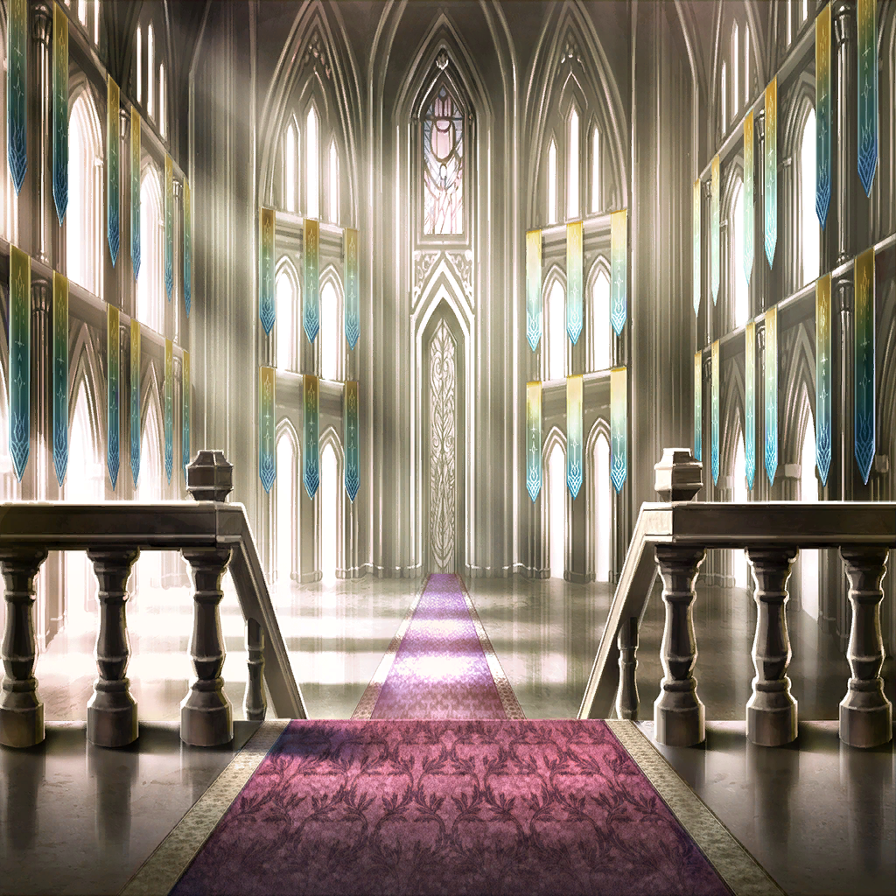

|
 |
| ニドヘガル |
オォォォォォォォォォォ…!! |
| エサイ・イグナシオ |
――、まだ盾は |
| ニドヘガル |
…遅い！ |
| エサイ・イグナシオ |
…、ぁ―― |
| ニドヘガル |
ようやく捉えたぞ、戦争屋 |
| エサイ・イグナシオ |
は、はは…ぁ
これは、絶対…絶命だね？ |
| ニドヘガル |
この期におよんで軽口か
…まあ、お前らしいと思っておこう |
| エサイ・イグナシオ |
…？ |
| ニドヘガル |
もう止まれ、自覚ある罪人よ
もうずっと以前から、お前は
その道を歩くことすら辛かったはずだ |
| エサイ・イグナシオ |
なに、を…知った風に… |
| ニドヘガル |
人が許容できる痛みには限度がある
善行であれ悪行であれ
積み上げればその足は重くなる |
| ニドヘガル |
…もう休んでも良い時だ
お前は十分に、お前の人生を生きた |
| エサイ・イグナシオ |
…これだから竜種というやつは… |
| |
わかっている
目の前の竜は敵である私にすら
敬意を払っているだけだ |
| |
“お前にも正義はあったのだろう”
“きっと事情があったのだろう”
“立場が違えば分かり合えた”と |
| エサイ・イグナシオ |
そんな、
バカなことが…あってたまるか… |
| |
だって、私は楽しかった |
| |
殺すことが。奪うことが
裏切ることが。踏みにじることが |
| |
だからこうして――
何度も何度も何度も何度も
飽きもせず繰り返したというのに |
| |
そんな私にすら救いがあるなどと
勘違いもはなはだしい |
| エサイ・イグナシオ |
だから…だから、竜は嫌いなんだ… |
| エサイ・イグナシオ |
お前たちはすぐそうやって
我々の内にありもしない“光”を見る… |
| ニドヘガル |
もう銃砲を構える力すらないか
…これ以上の苦しみは無用だ
我が牙にて眠るがいい |
| エサイ・イグナシオ |
私は、まだ…ッ |
| ニドヘガル |
…ッ！ |
| オピネウス |
――遅くなった
思わぬ裏切りに手間取ってな |
| エサイ・イグナシオ |
――…オピ、ネウス… |
| オピネウス |
出陣時の余裕はどうした、イグナシオ
この層であれば無敵などとほざいて―― |
| オピネウス |
……そうか |
| エサイ・イグナシオ |
………… |
| オピネウス |
…祭壇へ向かえ、エサイ |
| オピネウス |
貴様の繰り返した悪逆の末路
飽くことなき惨劇の果てに、
世界は必ず救われるだろう |
| オピネウス |
貴様がそう、望んだように |
| エサイ・イグナシオ |
あぁ、わかって…いる |
| ニドヘガル |
ようやく現れたか
正直、戦争屋と同時に相手取る可能性も
考慮していたが―― |
| オピネウス |
そのマギル…
暴食の層の霊泉を取り込んだか |
| ニドヘガル |
ああ、お前を倒す為にな |
| オピネウス |
たとえ今代最高の竜体であろうと
大地そのものを喰らうほどの容量はない |
| オピネウス |
…俺を倒して、自壊するつもりか |
| ニドヘガル |
あいにく、転生のあてはある
まあ、窮屈で不本意な器だが…
それで兄上が救えるなら安いものだ |
| オピネウス |
そうか。では―― |
| ニドヘガル |
決着をつけるとしようか、傲慢の竜王 |
 |

クェンス |
よっし、転移成功…！
これで―― |

ワギナオ |
計画通り、
ということでいいのか？ これは |
クェンス |
ああ、だがこりゃあ―― |
 |
| 傲慢の兵士 |
そ、総員ッ！
至急、都市中心部から退避っ！ |
| 傲慢の兵士 |
オピネウス様の竜界が――
暴走しておられる…！ |
|
| ローレアム |
わお、避難指示が的確 |
| ローレアム |
でも想像以上の余波だね、これ…！
街の崩壊はここまでは届いていない
みたいだけど… |
| カルネ |
竜界の範囲が…拡大し続けてる
このままだと、ここも呑み込まれる…？ |
クェンス |
…こりゃ、俺たちに
できることはもうねえな |
クェンス |
あとは信じて待つだけ、か… |
ワギナオ |
………… |
| 堕罪者 |
…まだだ、ワギナオ
“黒”の力を振るう好機は今ではない |
| 堕罪者 |
オピネウスが我らの存在を忘れ、
隙を晒した刹那――その一瞬が必要だ |
ワギナオ |
（…わかっている
今は――信じて待つしかない） |
| 堕罪者 |
それでいい
ああ、しかし―― |
| 堕罪者 |
ヒエロソリュマの崩壊か
これは――本来の歴史にはない光景だ |
| 堕罪者 |
我らには、
こんな可能性もあったのだな… |
|  |
| エナンジ |
………… |
| リル |
あ、まけいぬおばーさまはっけーん |
| エナンジ |
アレ、強すぎではないか!?
当初の予定と全然違う結果なのだが!? |
| エナンジ |
オピネウスめ…まさかあそこまで
竜体を鍛え上げておるとは |
| エナンジ |
これでは派手に裏切りをキメた我が、
彼我の力量差さえ読めぬクソザコ竜だと
思われるではないか…!! |

マティア |
実際、その通りなのでは？
暴食の層で大物ぶって登場した癖に
即裏切って即負けるとか…恥ですね |
| エナンジ |
この女、
めっちゃウザイのだが――ッ!!
あの時煽ったの、気にしておるのか？ |
マティア |
いいえ？ 全然？ これっぽっちも？
なーにが“千年修行するがよい”ですか
とか、全然思っていませんが？ |
| エナンジ |
絶対気にしておるではないか…！ |

メサルティム |
で、あのリザという女の言った通り…
本当にこちらについたのか？ 分別の竜 |
| エナンジ |
…まあ、そうさな
オピネウスは無自覚に“やり過ぎた” |
| エナンジ |
ここで止めねば、
この“夢”すらも食い尽くす
未曾有の怪物が生まれることとなる |
| セルジーク |
…ああ、夢。夢なのですね、これ |
| エナンジ |
そうとも、古き裔よ
だから――
自分の役割は、わかっていよう？ |
| セルジーク |
ええ、はい
とても楽しい旅でしたが… |
| セルジーク |
終わりはいつも寂しいものですね |
マティア |
…なんの話をしているのかは
わかりませんが、セルジーク
とっととリルを連れて下がりなさい |
| セルジーク |
おや、お二方？ 一体何を… |
メサルティム |
当然、戦いの準備だが
ニドヘガルはあのザフィリスの弟だという
正直、ひとりで任せるのは不安だ |
マティア |
オピネウスの竜界はもはや
人の力を抑えるものではない――
私にとって一番の障害が消えました |
マティア |
これはまさに、
挑戦のし時というものでしょう？ |
| セルジーク |
…恐ろしいまでに蛮族です～… |
マティア |
エナンジ、貴女も力を貸しなさい
このまま退場は
さすがに面子に関わるでしょう？ |
| エナンジ |
…ん～、まあよかろう
結局は人を認めぬ我であったが…
うぬらの可能性を見定めるのも一興か |
| エナンジ |
では、征くか
熱くなっている男どもの
くだらぬ意地の張り合いを冷かしに…！ |
| セルジーク |
…う～ん、このヒト
もしかして邪竜の類なのでは？ |